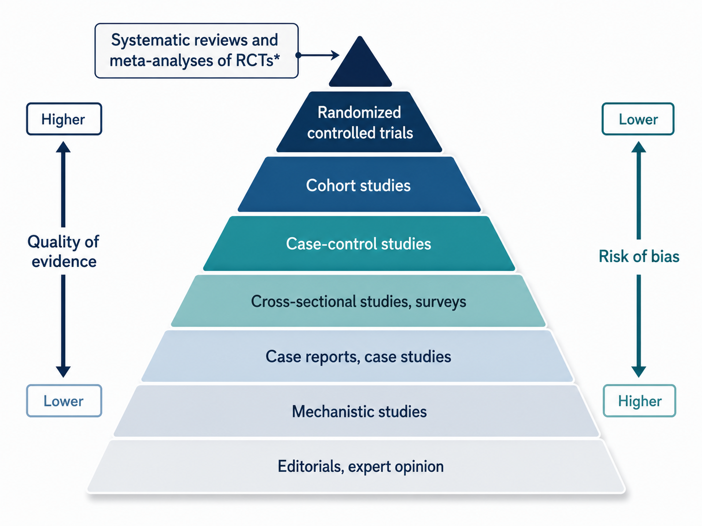
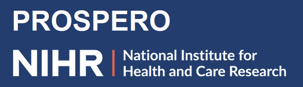
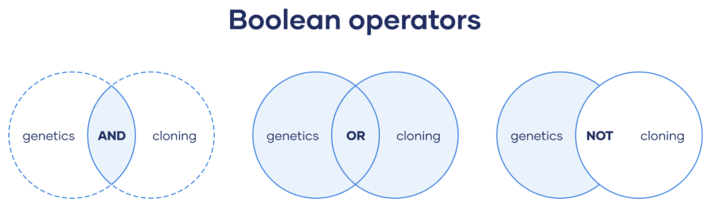
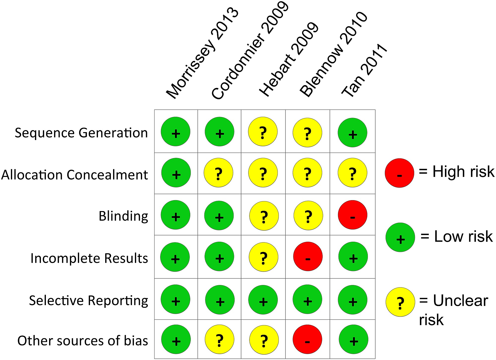

Systematic Review: Introduzione
Che cos’è una Systematic Review?
È una sintesi strutturata della ricerca esistente.
Caratteristiche
Parte da una domanda di ricerca chiara
Usa metodi espliciti per cercare, selezionare e valutare gli studi
Produce una sintesi trasparente e riproducibile

Perché fare una Systematic Review?
Prima di fare una nuova ricerca, dobbiamo sapere cosa esiste già
La letteratura cresce più velocemente della nostra capacità di leggerla
Singoli studi possono essere fragili, incompleti o contraddittori
Le Systematic Review aiutano a trasformare molti studi in una sintesi accessibile.
Cosa permette di fare una Systematic Review?
Riassumere lo stato attuale delle conoscenze
Capire se una domanda ha già una risposta abbastanza robusta
Identificare risultati coerenti, contraddizioni e lacune
Informare nuove ricerche, pratica clinica, policy e linee guida
Quando è particolarmente utile?
Quando molti studi rispondono a domande simili
Quando i risultati sembrano discordanti
Quando si vuole progettare un nuovo studio
Quando una decisione pratica richiede una sintesi affidabile
Domanda: prima di iniziare un nuovo studio, controllate sempre se esiste già una review recente?
Systematic Review e Meta-Analisi
Una meta-analisi è una sintesi quantitativa dei risultati di studi diversi.
Una meta-analisi dovrebbe sempre poggiare su una systematic review
La review definisce quali studi entrano nell’analisi
La meta-analisi stima quanto è grande, preciso e variabile un effetto
Senza review sistematica, aumenta il rischio di bias e cherry picking
Non tutte le review sono uguali
Systematic review: risponde a una domanda specifica con metodo riproducibile e sistematico
Narrative Review: descrizione qualitativa della conoscenza su un dato ambito (non adotta criteri espliciti-sistematici per selezionare gli studi)
Scoping review: mappa aspetti metodologici di un’area di ricerca
Meta-analisi: combina quantitativamente effect sizes comparabili
Umbrella review: sintetizza risultati da più systematic review/meta-analisi
Systematic Review - Come si fa?
Passaggi principali
Definire la domanda di ricerca
Scrivere e preregistrare il protocollo
Cercare gli studi in modo sistematico (screening)
Selezionare gli studi con criteri espliciti e trasparenti (selection)
Estrarre i dati di interesse (extraction)
Sintetizzare i risultati
1. Definire la domanda di ricerca
Criteri PICO
P = Population | partecipanti
I = Intervention | esposizione / predittore
C = Comparison | gruppo di controllo
O = Outcome | esito principale
Le Systematic Review nascono in ambito clinico, ma si possono espandere a più ambiti di ricerca.
2. Preregistrazione del protocollo
Registrazione in anticipo di: domanda, criteri e metodi
La pre-registrazione rimuove il rischio di decisioni post-hoc
Rende trasparente eventuali deviazioni dal piano iniziale
Dove caricarla
PROSPERO: registro di protocolli per systematic review
Open Science Framework: principale database di pre-registrazioni


3. Screening della letteratura
Team di ricerca
Idealmente almeno 3-4 persone
Due/tre reviewer indipendenti per screening ed estrazione dati
Un terzo reviewer o supervisore per risolvere disaccordi
3. Screening della letteratura
Database principali
PubMed / MEDLINE: biomedicina e salute
PsycInfo: psicologia
Web of Science: database multidisciplinare
Scopus: ampia copertura bibliografica
La scelta dipende dalla domanda di ricerca

3. Screening della letteratura
Search Query

Virgolette: per cercare una frase esatta
Troncamento: per recuperare varianti della stessa radice
Esempio:
("post-traumatic stress" OR PTSD) AND (EMDR OR "eye movement desensitization") AND (child* AND adolesc*)
3. Screening della letteratura
Letteratura grigia
Include report, tesi, preprint, atti di conferenze
Riduce il rischio di publication bias
Fonti principali
4. Selezione degli studi
5. Estrazione dei risultati & valutazione bias
Si estraggono caratteristiche di: studio, campione, intervento e outcome
Risk of Bias e/o GRADE valutano la credibilità interna degli studi inclusi
La qualità degli studi influenza la fiducia nei risultati.

6. Sintetizzare e riportare i risultati
Organizzare gli studi inclusi in modo chiaro e trasparente
Descrivere caratteristiche, risultati e differenze tra gli studi
Evidenziare pattern comuni, risultati contrastanti e lacune
Next step (se possibile) → Meta-Analisi
L’obiettivo è trasformare molti studi in una sintesi leggibile e replicabile
In sintesi
La letteratura cresce più velocemente della nostra capacità di leggerla
Le Systematic Review aiutano a trasformare molti studi in una sintesi ordinata
Una meta-analisi è valida solo quanto lo è la review su cui si basa
Metodo, pre-registrazione e trasparenza proteggono da bias e cherry picking
L’obiettivo finale è produrre evidenza utile per ricerca, pratica e decisioni